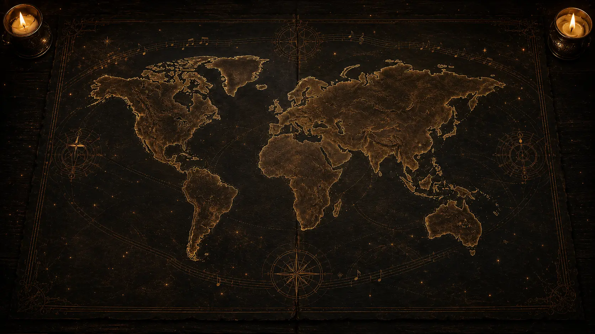

Play · Musical world atlas
Where shall the guitar take us?

Today's Level 1 route
A Minor Musical Conversation
Turn familiar pentatonic notes into call and response.
2 of 8
moments explored
moments explored